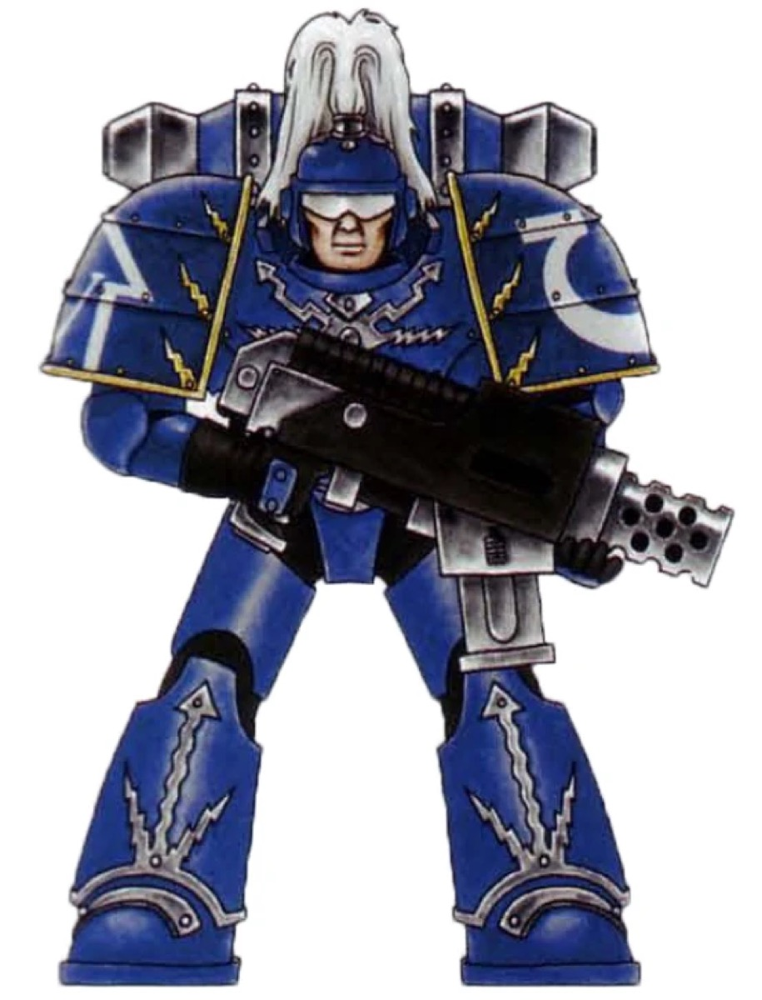

Thunder Warriors
| Thunder Warriors | |
|---|---|
| Legiones Cataegis | |
The Raptor Imperialis, banner of the Thunder Warriors Artwork © Games Workshop | |
| Active | Late M29 – c. 712.M30 (survivors until the Horus Heresy, 005–014.M31) |
| Allegiance | Emperor of Mankind |
| Type | Gene-engineered shock infantry |
| Organisation | Twenty legions, each under a captain styled primarch |
| Created | Hidden laboratories in the Himalazian mountains, and the gene-halls of Luna |
| Wargear | Mark I Thunder power armour; early bolters; blade and hammer |
| Notable members | Arik Taranis, the Lightning Bearer Ushotan, primarch of the IV Legion Ghota |
| Successors | Space Marine Legions; Adeptus Custodes (in the field) |
| Fate | Destroyed on the Emperor's order after the Unification; a few survived in hiding |
The Thunder Warriors, also the Thunder Legions or Thunder Regiments and, in High Gothic, the Legiones Cataegis, were twenty legions of superhuman soldiers made by the Emperor of Mankind to end the warfare of the Age of Strife on Terra. They were the first of his gene-engineered warriors and the prototype of the Space Marines who replaced them. They were made from adult men by surgery, chemistry and gene-sculpting, clothed in the first suits of power armour and sent to war under a banner of a raptor and lightning. They were stronger, faster and more savage than any warrior the later Legions fielded, and they won the Unification Wars. They were also designed, or at least permitted, to burn out within a few decades, and when the peace was made the Emperor had them destroyed.[1][2]
The Imperium taught for ten thousand years that the last of the Thunder Warriors fell heroically at Mount Ararat, in the final battle of the Unification. That is not what happened. Testimony released by the Adeptus Custodes, and now supported by records of the Mechanicum and the Imperial Palace archives, states that the Thunder Warriors were culled by the Emperor's order. The cost of that decision, the fate of the few who survived it, and its influence on the shape of the Imperium that followed are among the most discussed matters of the founding age.[3]
Creation
[edit]Old Night on Terra
[edit]In the late 29th millennium Terra had been at war with itself for two and a half thousand years. The planet's government had dissolved into dozens of techno-barbarian states, whose rulers fought with the surviving weapons of the Dark Age of Technology and with armies of gene-bred and machine-grafted soldiers. The warlords of that age, such as Kalagann of Ursh, Cardinal Tang of the Yndonesic Bloc and Narthan Dume of the Pan-Pacific Empire, held the whole planet in a stalemate of mutual slaughter. A few were corrupted by Chaos, and at least one was served by a daemon.[4]
The Emperor, who had walked among Mankind for many thousands of years under many names, judged that the Strife could be ended only by force. He had worked for centuries in hidden laboratories beneath the Himalazian mountains and in the gene-halls of Luna, with a staff of savants and gene-wrights, some willing and some taken captive from his enemies. The staff became the Imperial Biotechnical Division. What it made was an army that could beat the warlords' own.[1]
The process
[edit]The Thunder Warriors were made from adult volunteers and conscripts, which was the chief difference between them and the later Astartes, who were taken in adolescence. The process was a combination of surgical and alchemical alteration, gene-sculpting and muscle grafting. It thickened the skeleton, strengthened the muscles, sharpened the reflexes and wired in resistance to environmental hazard and to psychic attack. The Imperial records add that the Emperor's own strategic gifts went into their design, so that the Thunder Warriors were not simply strong. They were trained to fight as an army.[1]
The technique was not perfected, and it relied on adult bodies that were poorly suited to the changes. Some of the subjects died on the table. Of those who lived, many suffered metabolic collapse within a few decades or broke down in mind, with fits of uncontrollable rage and hallucination. The Emperor knew of the flaw from the first. Whether he could have removed it, or whether he did not try, is a question the records leave open.[1]
Organisation
[edit]The Thunder Warriors were organised in twenty large formations, called legions or regiments, each led by a general who held the title of primarch. The word would later be given to the Emperor's sons. Unlike the primarchs of the Space Marine Legions, who were physically and mentally unlike the warriors they led, the Thunder Warrior primarchs were no more than the best of the men they commanded, chosen for skill and for stability of mind.[1]
The Thunder Legions seem to have had tactical roles that were later echoed by the Space Marine Legions. The IV Legion of the Cataegis, for example, was known as the Iron Lords and specialised in siege warfare, as the IV Legion of the Space Marines, the Iron Warriors, would do. The pattern is among the clues the Palace archives offer that the Emperor planned the Space Marine Legions as the continuation of a design he had begun with the Thunder Warriors.[3]
Wargear
[edit]
The Thunder Warriors wore the Mark I Thunder pattern, the first power armour ever made. It was an early and unrefined suit, heavy and slow to repair, whose broad shoulders and chest plates were marked with the lightning bolt of the Emperor's cause. Its plates bore the colours of the legion. The Thunder Warriors added to this the early bolter, blades and hammers of power, and the heavier weapons of the field armies. They marched under the Raptor Imperialis, a banner showing a raptor's head and lightning, which was the forerunner of the Imperial Aquila and the first of the symbols of the Imperium.[1]
Character
[edit]The Thunder Warriors were deeply emotional. The Emperor's later Astartes were shaped to restrain their feelings, and the Custodes were drilled until theirs were almost invisible, but the Thunder Warriors kept their full human range, and relished the power and savagery of battle. Contemporary accounts also record a dry humour, which was noted by the Imperial Army officers who served beside them and by the Custodes who later had to fight them. They were not easily disciplined. In the field they could stop obeying an order in the middle of an engagement, and the Emperor's commanders had to plan for the possibility.[3]
Abilities
[edit]The Thunder Warriors were larger than most Space Marines of the first Legions and stronger. A single Thunder Warrior could overpower several Astartes in close combat. The accounts describe a skeletal system thicker than that of a Legionary, with a skull that could be used as a weapon, and legs that could kick through the torso of an ordinary man. Their reflexes were such that one is recorded dodging the bolt of a plasma gun while fighting two Astartes at the same time. Their upper-body strength, helped by the armour, was greater than anything the later warriors had.[1]
They were designed to resist psychic assault. Any psyker who attempted to enter the mind of a Thunder Warrior was met with pain, and a few died of the backlash. The feature was intentional. In the late Age of Strife the Emperor's enemies often used sorcery, and the Thunder Warriors were to meet them on their own ground. In combat the Thunder Warrior's chief weakness was a short life, and even in decline, a Thunder Warrior was still more than a match for an Astartes.[1]
Service
[edit]The Unification Wars
[edit]The Thunder Warriors were first used in the late 29th millennium. They won battle after battle, against enemies whose forces were larger and who held the advantage of ground. The engagements of the Unification lasted for weeks and killed their millions, and the Thunder Warriors were at the centre of the heaviest. The Ninth Battle of Xozer in 992.M29, in which Kalagann of Ursh died in the Nordafrik Conclaves, was one of the first great victories. The most terrible, against the Pan-Pacific Empire of Narthan Dume in the early 30th millennium, took a generation. In each the Emperor's own presence, and later that of the Custodes, was decisive, but the Thunder Warriors did the fighting.[4]
In the campaigns' later years, the Thunder Warriors were accompanied by the first of the Emperor's other creations. The Adeptus Custodes, who were taller and better trained, served as his guard and as the only formation in the army capable of defeating the Thunder Legions if they turned. The Imperial Army, a force of enhanced but more durable soldiers, garrisoned the territory that the Thunder Warriors took.[3]
The Culling
[edit]The accepted account of what followed was provided by Arik Taranis and then by the Custodes. The Emperor needed the people of Terra to unite behind a single leader and needed the official record to show that he had reunited the world himself, with warriors who had died gloriously. The Thunder Warriors were created for war and were not suited to anything else, and their instability made them a danger to the new state. At first the Emperor did not replace those who fell. When the war was over, in about 700–712.M30, he ordered the rest destroyed.[a][3]
Imperial records differ on how the culling was carried out. The Custodes' testimony credits the Custodian Guard under Constantin Valdor, the only soldiers in the army who could defeat a Thunder Warrior in open battle. A second source states that a cadre of several hundred Custodians, led by Valdor, was joined by several thousand of the first Space Marines of the I Legion, prototypes of the Dark Angels. A third states that the Thunder Warriors, aware at last that the Emperor had made them short-lived, turned on him before the end of the wars, and that the cull was an act of defence. These accounts are not mutually exclusive.[3]
Survivors
[edit]The Palace coup
[edit]In the last years of the Unification, c. 700.M30,[b] a group of at least two dozen Thunder Warriors under Ushotan, who had been primarch of the IV Legion, took part in the Imperial Palace Coup. It was led by a former Provost Marshal, Uwoma Kandawire, who hoped to call Valdor to account for the destruction of the Thunder Warriors. The surviving warriors joined it for revenge and for an honourable death in battle, which was better than waiting for madness or metabolic failure. They were put down by the first Space Marines to be deployed in open battle, raised in the First Founding of about 700.M30. Ushotan was killed by Valdor in single combat.[3]
The Dait'Tar
[edit]Bands of Thunder Warriors continued to exist in hiding, and some escaped off Terra. A few were hunted down by the first Astartes of the I Legion, the future Dark Angels. In the early Great Crusade, in the first decades after 798.M30, a small group of survivors calling themselves the Dait'Tar were among the renegades who began the Cerberus Insurrection. The Emperor sent the XII Legion, then called the War Hounds and later the World Eaters, to crush the uprising. Despite their physical decline, and though they were badly outnumbered by one of the strongest of the Legions, the Thunder Warriors killed four or five times their number of Astartes before they were overwhelmed in several hours of close fighting.[3]
Taranis
[edit]The best known of the Thunder Warriors is Arik Taranis, the Lightning Bearer, who in the older Imperial account raised the Banner of Lightning at the proclamation of Unity and died of his wounds on the field at Ararat. The Custodes' testimony holds that he lived. He took many names in the intervening years, among them that of a Terran called Babu Dhakal, and he survived into the Horus Heresy (005–014.M31). He had learned something of the Emperor's methods, and tried to use it to create a new army of Thunder Warriors under his own command. He suspected that his people had been made short-lived on purpose, though he hoped it was only a flaw. In the end a Thunder Warrior named Ghota encountered a band of Traitor Astartes and from one of them recovered a means of curing the instability in his people's genes. Taranis was cured, though not before he had suffered considerable degeneration.[3]
Gladiators and others
[edit]Other survivors lived out their days in obscurity on Terra. Four, who still had the strength of warriors, served as arena fighters in the Maw, in the slums of the Outer Palace, owned by a former astropath who kept them alive by transplanting the organs of dead Thunder Warriors into their bodies. One died in the arena, one went mad and was killed by a comrade, and one died fighting a daemon-possessed Traitor Legionary. The last, Dahren Heruk, was killed at his own request by a Custodian whose life he had saved. A World Eaters Space Marine, Endryd Haar, who served the Imperium as a Blackshield, may have been a Thunder Warrior who was successfully made into a Space Marine. He told Malcador the Sigillite that he had fought alongside the Emperor in the Unification and called the Dait'Tar his brothers.[3]
Legacy
[edit]The Thunder Warriors were the pattern for the Space Marines. The second generation of the Emperor's gene-craft drew on what had been learned from them: the choice of adolescent recruits, whose bodies could accept the changes, the implants of the Astartes, and the single-minded loyalty and iron discipline of the Legions. The Space Marines are in several respects an apology for the failure of the Thunder Warriors, and in others a continuation. Those who later studied the fate of the Legions, and those who study the Heresy, have noted the Emperor's willingness to sacrifice his own creations to the plan.[1]
Their iconography survives. The lightning bolt appears in the heraldry of several Chapters and in Custodian regalia, and the Raptor is the forebear of the Imperial Aquila. The oldest regiments of the Astra Militarum honour the veterans of the Unification, and the Mark I pattern is revered in the armouries of Terra and Mars as the first power armour. The Custodes have never forgotten what they were asked to do.[3]
Timeline
[edit]| Date | Event |
|---|---|
| Late M29 | The first Thunder Warriors are made in the Himalazian laboratories and the gene-halls of Luna; they take the field in the Unification Wars. |
| 992.M29 | Ninth Battle of Xozer: Kalagann of Ursh slain, one of the first great victories. |
| Early M30 | The generation-long war against Narthan Dume's Pan-Pacific Empire.[c] |
| c. 550.M30 | The Emperor begins the Space Marine project that will replace them. |
| 669.M30 | Battle of Mount Ararat; in the older record, the last stand of the Thunder Warriors and the death of Arik Taranis. |
| c. 700.M30 | The Palace coup of Uwoma Kandawire; Ushotan slain by Constantin Valdor. The first Space Marines fight in open battle.[d] |
| c. 700–712.M30 | The Culling: the Custodes and the I Legion destroy the remaining Thunder Legions.[e] |
| 712.M30 | The Unification of Terra declared complete. |
| c. 800s.M30 | The Dait'Tar fall to the War Hounds, the future World Eaters, in the Cerberus Insurrection. |
| 005–014.M31 | Arik Taranis, living as Babu Dhakal, tries to raise a new army during the Horus Heresy; Thunder Warrior survivors fight as gladiators in the Maw beneath the Imperial Palace. |
See also
[edit]Notes
[edit]References
[edit]- ^ a b c d e f g h i French, John. The Solar War (novel). Black Library, Ch. 15. Dembski-Bowden, Aaron. The First Heretic (novel). Black Library, Ch. 17.
- ^ Wraight, Chris. Valdor: Birth of the Imperium (novel). Black Library, Chs. 5, 14-15. Dembski-Bowden, Aaron. Master of Mankind (novel). Black Library, Ch. 6.
- ^ a b c d e f g h i j k Reynolds, Josh. Blackshields: The Broken Chain (Audio Book). Black Library. Codex: Adeptus Custodes (8th Edition), pg. 9. Games Workshop.
- ^ a b McNeill, Graham. The Outcast Dead (novel). Black Library. Reynolds, Josh. Blackshields: The False War (Audio Book). Black Library.